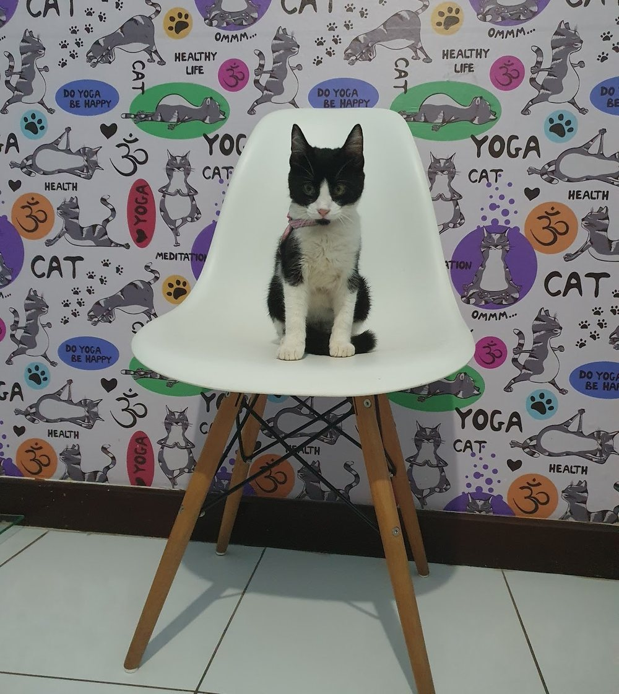

Início · Atendimento · Gatos
Gatos: uma consulta com menos estresse.
Para muitos gatos, o difícil não é a consulta: é a caixa, o carro e o lugar novo. A My Pet Zen tem um canto com papel de parede de gatos. Esta página traz orientações gerais para a visita ser mais calma.
Entenda
Por que gato é diferente
Gato não é um cão pequeno. Costuma esconder sinais de dor e de doença, estranha mudanças de rotina e sente muito o transporte e os lugares novos.
Esconde sinais
Dor e doença podem passar despercebidas por algum tempo.
Sente o ambiente
Cheiros, barulhos e outros animais pesam.
Tem a sua rotina
Comida, água e caixa de areia contam muito sobre a saúde.

Dias antes
A caixa de transporte
- Deixe à vistaA caixa fica aberta num canto tranquilo da casa, com uma manta, alguns dias antes.
- Cheiro de casaForre com uma toalha que o gato já usa; cubra a caixa com outra durante o trajeto.
- Um por caixaMesmo gatos que se dão bem viajam melhor separados.
- Caminho calmoCaixa firme no carro, som baixo, sem abrir a porta no trajeto.
No consultório
Na sala
- A caixa é aberta e o gato sai quando estiver pronto — às vezes o exame começa dentro dela.
- Manuseio gentil, com pausas quando ele pede.
- Conversa sobre a rotina antes do exame: comida, água, caixa de areia, comportamento.
- Explicação clara do que foi visto e do que vem depois.
Ao agendar, avise se o seu gato fica muito agitado, se morde ou se esconde. Isso ajuda a organizar o atendimento.
Depois
De volta em casa
Deixe o gato num cômodo quieto, com água e caixa de areia. Se houver outros gatos, reapresente com calma: o cheiro do consultório pode estranhar a turma.
Observe
Sinais para contar na consulta
- Comer menos ou mudar de ração sem explicação.
- Beber mais água ou urinar mais.
- Usar a caixa de areia de outro jeito.
- Esconder-se mais, ficar menos ativo, mudar o jeito de se lamber.
Nenhum desses sinais é diagnóstico: são pistas para a conversa com a veterinária.
Dúvidas frequentes
Perguntas comuns
A My Pet Zen atende gatos?
Sim: é um consultório veterinário de cães e gatos.
Posso dar calmante antes?
Não dê remédio por conta própria. Se o seu gato sofre muito com a saída, converse com a veterinária antes.
Meu gato nunca saiu de casa. Por onde começo?
Pela caixa de transporte, alguns dias antes. Conte como ele é ao agendar.
Com hora marcada
Agende o atendimento do seu cão ou do seu gato.
R. Silveira Martins, 1016, Narandiba (Cabula). Segunda a sexta, das 8h às 17h; sábado, das 8h às 12h. O agendamento é pelo WhatsApp (71) 98739-0603.